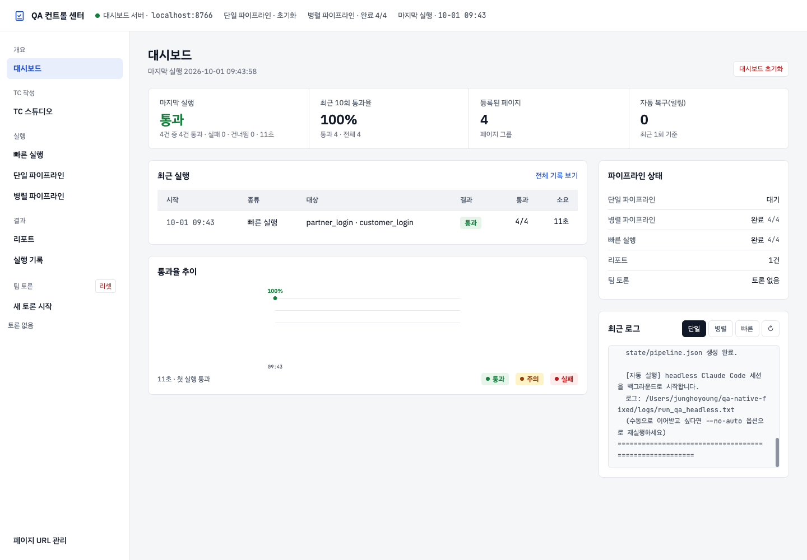
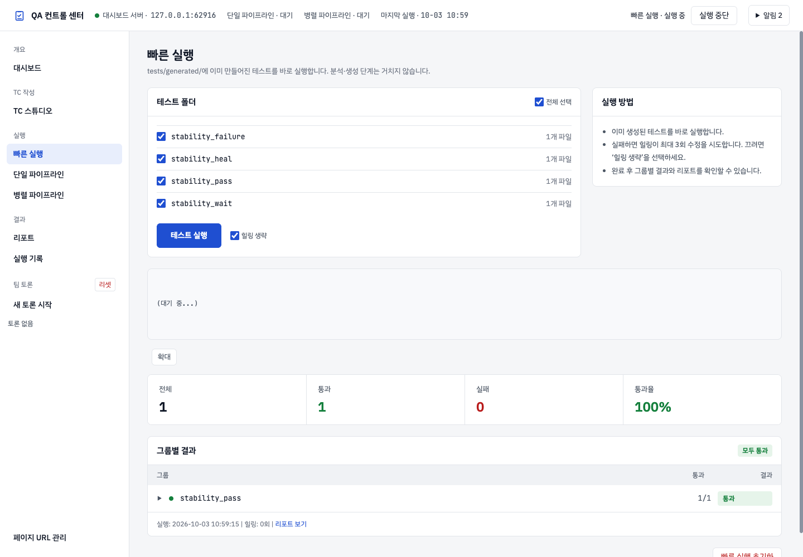
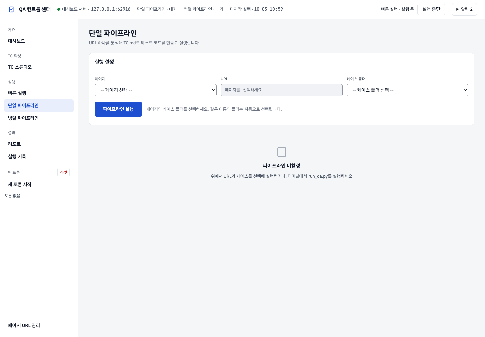
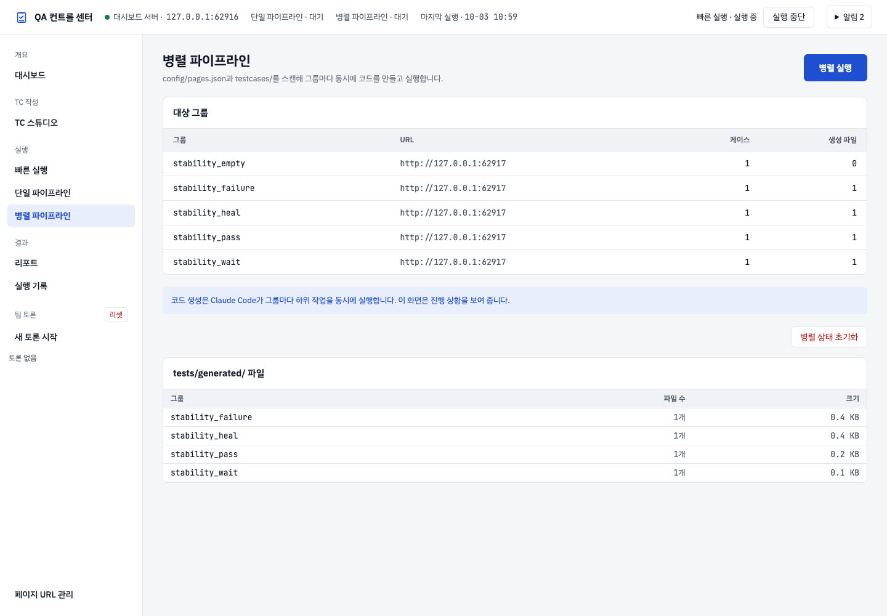
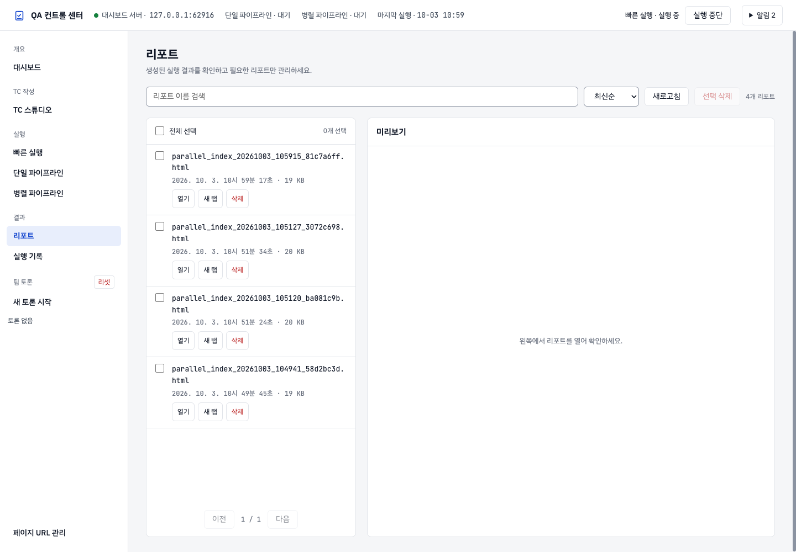
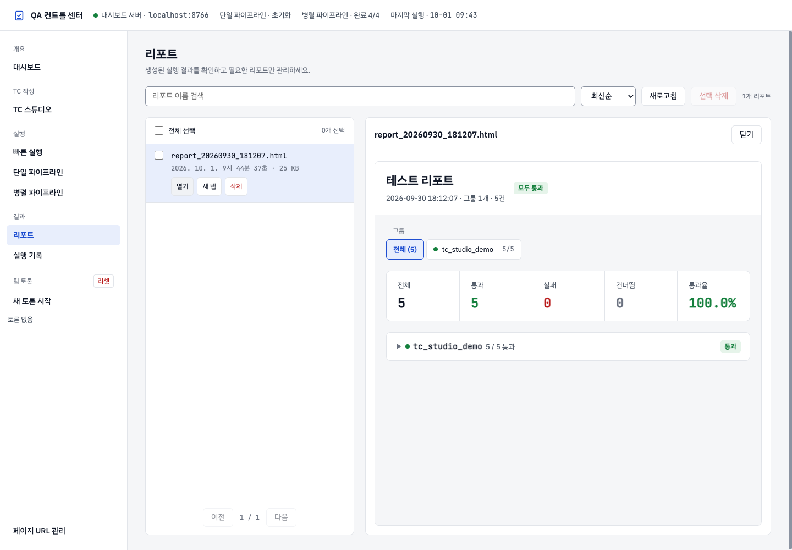
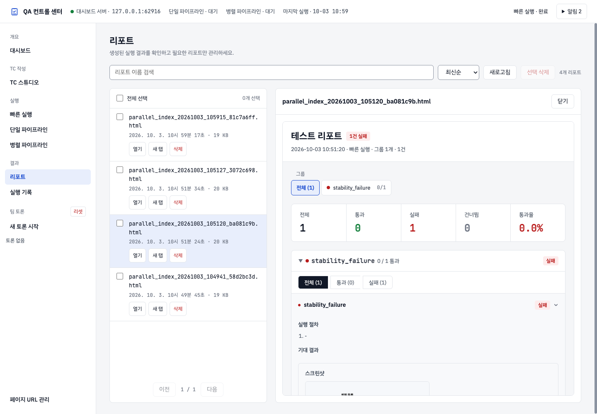
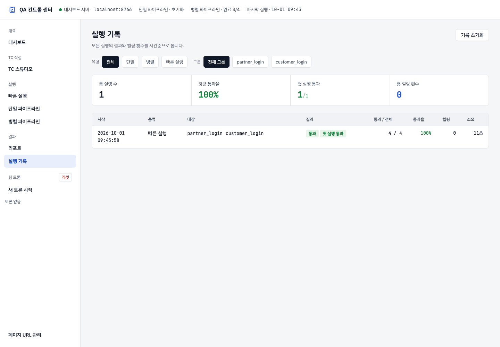
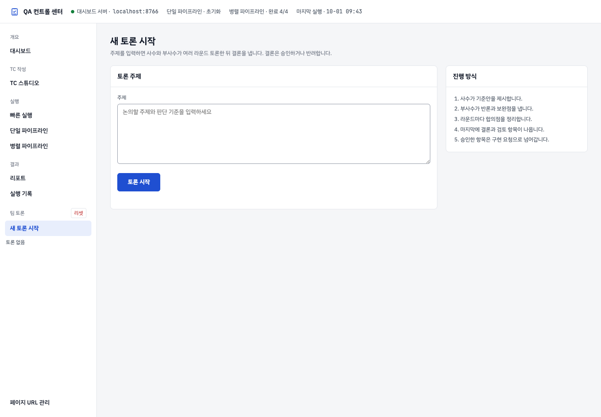
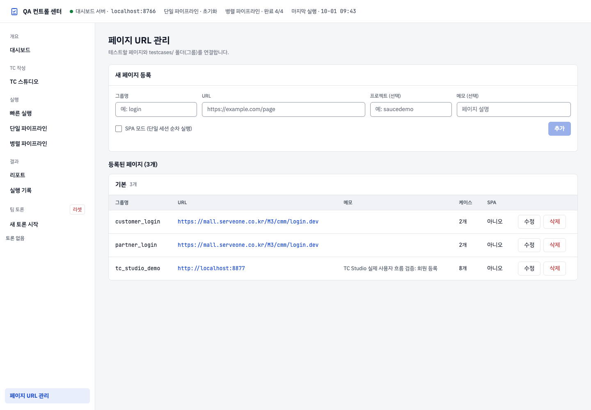

웹 QA 대시보드 사용자 가이드
- 화면 기준: 2026-10-02 최신 밝은 테마. 주의는 노란 배경, 실패는 연한 빨간 배경으로 구분합니다.
- 주소: http://localhost:8766/. 서버 주소나 포트가 다르면 관리자가 제공한 주소를 사용합니다.
- 이미지: 현재 대시보드에서 Playwright로 촬영했습니다. 스위트·그룹 이름, 건수와 시각은 이 PC의 예시 데이터이며 사용자 환경에서는 달라집니다.
- TC 작성부터 내보내기까지는 TC 스튜디오 사용자 설명서를 읽으세요. 이 문서는 대시보드 메뉴와 리포트를 안내합니다.
1. 접속과 메뉴
프로젝트 루트에서 서버를 켭니다. 설치는 README를 참고하세요.
python3 agents/dashboard/serve.py --port 8766
브라우저에서 위 주소를 엽니다. 왼쪽 메뉴로 화면을 바꾸고, 상단 QA 컨트롤 센터를 누르면 대시보드로 돌아옵니다. 파이프라인 실행·TC 초안 생성에는 로컬 Claude CLI가 설치되고 로그인되어 있어야 합니다.
| 메뉴 | 목적 |
|---|---|
| 대시보드 | 현재 상태와 최근 실행 추이를 한눈에 확인 |
| TC 스튜디오 | 기획 입력, TC 생성·직접 작성·수정·검토, Excel·Markdown 내보내기 |
| 빠른 실행 | 이미 만들어진 테스트 코드 실행 |
| 단일 파이프라인 | 한 URL의 TC로 테스트 코드 생성과 실행 |
| 병렬 파이프라인 | 여러 그룹의 코드 생성과 실행 |
| 리포트 | 저장된 HTML 결과지 검색·열기·관리 |
| 실행 기록 | 이전 실행 결과와 통과율 비교 |
| 새 토론 시작 | 주제를 등록하고 팀 토론 진행 |
| 페이지 URL 관리 | 그룹별 URL 등록·수정 |
1.1 처음 접속하기 전 확인
| 준비물 | 확인 방법 | 필요한 작업 |
|---|---|---|
| 실행 중인 대시보드 서버 | 브라우저에서 http://localhost:8766/ 접속 |
모든 웹 화면 |
| 사용할 TC | TC 스튜디오의 스위트 또는 testcases/그룹명/ 폴더 확인 |
작성·내보내기·파이프라인 |
| 대상 페이지 URL | 실제 브라우저로 접속해 원하는 화면인지 확인 | 파이프라인 실행 |
| Claude CLI 로그인 | 서버가 실행되는 PC의 터미널에서 claude 실행 후 안내 확인 |
TC 초안 생성·테스트 코드 생성·LLM을 사용하는 실패 수정 |
| 생성된 테스트 코드 | 빠른 실행의 테스트 폴더 목록 확인 | 빠른 실행 |
브라우저 창만 열어서는 서버가 켜지지 않습니다. 접속되지 않으면 서버를 실행한 터미널의 오류부터 확인하세요. localhost는 현재 PC를 뜻하므로 다른 PC의 서버를 사용할 때는 담당자가 알려 준 주소가 필요합니다.
1.2 하고 싶은 일에 맞는 시작점
| 지금 가진 자료 | 하려는 일 | 이동할 곳 |
|---|---|---|
| 기획 문서·텍스트·문서 URL | TC 초안 작성 | TC 스튜디오 → 기획 정보 · 생성 |
| 기존 TC Excel | 가져와서 수정·다시 내보내기 | TC 스튜디오 → 엑셀 가져오기 |
| 아무 파일 없음 | TC를 직접 입력 | TC 스튜디오에서 빈 양식을 등록한 뒤 라이브러리 |
| 승인한 TC | Excel 공유·Markdown 저장 | TC 스튜디오 → 내보내기 |
| Markdown TC와 URL | 테스트 코드를 처음 만들고 실행 | 단일 또는 병렬 파이프라인 |
| 이미 만들어진 테스트 코드 | 같은 검증 다시 실행 | 빠른 실행 |
| 이전 실행의 결과 | 실패 원인이나 증거 확인 | 리포트·실행 기록 |
예를 들어 Excel 문서만 전달하려면 TC 스튜디오의 내보내기에서 작업이 끝납니다. 실제 웹 검증까지 진행하려면 Markdown 반영 후 파이프라인으로 이어 갑니다.
1.3 헷갈리기 쉬운 용어
| 용어 | 뜻 |
|---|---|
| TC | 무엇을 수행하고 어떤 결과를 확인할지 적은 테스트케이스 |
| 스위트 | TC 스튜디오에서 함께 관리하는 케이스 묶음 |
| 시트 | 스위트 안의 큰 구분. Excel 시트와 연결 |
| 그룹 | URL과 testcases/ 하위 폴더를 연결하는 이름 |
| 파이프라인 | TC와 URL을 읽고 코드를 생성·검토·실행하는 일련의 작업 |
| 힐링 | 실패한 테스트의 원인을 분석하고 코드를 수정해 다시 시도하는 작업 |
| 리포트 | 특정 실행의 결과를 저장한 HTML 파일 |
| Trace | 실패 시 브라우저 동작을 자세히 확인하는 Playwright 기록 |
스위트·시트·그룹의 이름이 모두 같아야 하는 것은 아닙니다. TC 스튜디오에서 Markdown을 내보낼 때 그룹 매핑으로 연결합니다.
2. 대시보드와 상태 표시

요약과 최근 실행 추이에서 통과·주의·실패를 확인합니다. 통과는 초록 배경, 주의는 노란 배경, 실패는 연한 빨간 배경이며 글자로도 상태를 표시합니다. 주의 표시는 상세 확인이 필요한 상태입니다. 구체적인 원인은 해당 실행 화면에서 확인하세요.
상단에는 서버 주소와 단일·병렬 파이프라인 상태가 표시됩니다. 실행이 끝났는지는 단계 표시와 결과 건수를 함께 확인합니다. 화면에 결과가 없으면 아직 실행 이력이 없는 환경일 수 있습니다.
2.1 결과를 읽는 순서
- 서버 주소와 실행 시각을 확인해 지금 보려는 실행이 맞는지 판단합니다.
- 전체 건수와 통과·실패·건너뜀을 함께 확인합니다.
- 실패 또는 주의가 있으면 해당 실행 화면과 리포트로 이동합니다.
- 그룹을 펼쳐 개별 TC의 결과와 사유를 읽습니다.
예를 들어 전체 10건 중 통과 8건, 실패 1건, 건너뜀 1건이라면 10건 모두 검증에 성공한 것이 아닙니다. 실패 1건의 오류와 건너뜀 1건의 사유를 각각 확인해야 합니다. 모두 통과 표시가 있어도 건너뜀 건수가 있는지 확인하세요.
2.2 화면의 건수가 서로 다를 때
TC 라이브러리 건수, Markdown 내보내기 대상 건수, 실행한 테스트 수는 서로 다를 수 있습니다. 초안·추정 문구·검증 오류·그룹 미연결 항목이 내보내기에서 빠지거나 실행할 그룹을 일부만 선택했는지 확인합니다. 서로 다른 실행 시각의 결과를 비교하고 있지 않은지도 확인하세요.
3. TC 스튜디오
왼쪽 TC 스튜디오를 누릅니다. 기존 스위트를 선택하면 저장된 TC가 열리므로 Excel을 다시 올릴 필요가 없습니다.
기획 정보 · 생성 → 초안 검토 → 라이브러리 → 내보내기 순서로 작업합니다. 직접 작성하거나 Excel로 가져올 수도 있습니다. 시트 추가·이름 변경, 빈 분류 작성, 작성 규칙 편집과 Markdown 반영 조건은 자세한 설명서에 있습니다. 별도의 Import Studio 메뉴는 TC 스튜디오에 통합되어 있습니다.
3.1 처음 쓰는 사람의 권장 순서
- TC 스튜디오 설명서의 따라 하기에서 빈 양식과 기획 예제를 준비합니다.
- 시트·빈 분류를 만들고 예제를 소스로 추가합니다.
- 초안을 생성하거나 직접 작성한 뒤 내용을 검토합니다.
- Excel로 내려받아 대표 케이스의 제목·절차·기대 결과를 확인합니다.
- Markdown이 필요하면 승인·문구 확인·그룹 매핑 조건을 충족한 뒤 미리보기와 반영을 진행합니다.
Excel 내려받기는 PC의 다운로드 폴더에 파일을 저장합니다. md 반영은 서버가 실행되는 프로젝트의 testcases/그룹명/에 파일을 저장합니다. 저장 위치가 다릅니다.
4. 빠른 실행

- 빠른 실행에서 실행할 그룹을 선택합니다.
- 실패한 테스트의 자동 수정을 사용하지 않으려면 힐링 생략을 선택합니다.
- 테스트 실행을 누릅니다.
- 진행 로그와 결과의 통과·실패·건너뜀 건수를 확인합니다.
빠른 실행은 tests/generated/에 있는 코드를 실행합니다. 새 기획이나 TC로 코드를 만들려면 단일·병렬 파이프라인을 사용하세요. 건너뜀은 테스트가 실행되지 않은 결과이며 통과와 다릅니다. 결과 항목의 사유를 읽으세요.
4.1 그룹 선택과 힐링 설정
처음에는 전체 선택 상태일 수 있습니다. 특정 그룹만 확인하려면 전체 선택을 해제하고 원하는 폴더만 체크하세요. 폴더 옆 파일 수는 생성된 코드 파일 수이며, TC 스튜디오의 스위트 전체 건수와 같다고 가정하지 않습니다.
- 힐링 생략을 선택하지 않음: 실패 수정 절차를 사용할 수 있습니다. 실패 상태와 로그를 확인하며 진행을 기다립니다.
- 힐링 생략을 선택함: 현재 코드의 실행 결과를 확인할 때 사용합니다. 실패했다고 자동으로 코드가 수정되는 것을 기대하지 않습니다.
4.2 시작 후와 완료 후 확인
실행 중에는 로그 영역을 확인합니다. 로그가 길면 확대를 사용합니다. 완료되면 실행 시각이 방금 시작한 작업의 시각인지 확인하고, 그룹별 결과에서 그룹을 펼쳐 개별 TC를 읽습니다. 리포트 보기가 표시되면 저장된 결과지를 엽니다.
| 상황 | 다음에 할 일 |
|---|---|
| 폴더 목록이 비어 있음 | Markdown TC만 있는지 확인. 단일·병렬 파이프라인으로 테스트 코드 생성 |
| 실행 버튼이 비활성 | 생성된 테스트 폴더가 있는지 확인 |
| 폴더를 선택하라는 안내 | 실행할 폴더 체크 후 다시 실행 |
| 이전 결과가 보이는 것 같음 | 결과의 실행 시각과 새 로그 확인 |
| 힐링 필요·한도 초과 | 실패 상세와 로그를 확인해 수정 요청에 첨부 |
| 리포트가 없음 | 실행 완료 여부와 리포트 생성 로그 확인 |
5. 단일 파이프라인

- 단일 파이프라인에서 페이지와 TC 폴더를 선택합니다.
- 대상 URL과 케이스 폴더가 맞는지 확인합니다.
- 파이프라인 실행을 누릅니다.
- 단계 표시와 로그를 확인합니다. 분석·코드 생성·리뷰·실행·필요한 실패 수정이 이어집니다.
- 완료 후 결과를 펼쳐 확인하고 저장된 리포트를 엽니다.
실행 버튼을 반복해서 누르지 말고 진행 상태를 확인합니다. 파이프라인 초기화는 실행 시작 버튼이 아닙니다. 현재 결과를 확인한 뒤 상태를 초기화할 때 사용합니다.
5.1 입력란을 채우는 예
아래의 member_registration은 설명용 그룹명입니다. 자신의 실제 그룹과 URL로 바꿉니다.
| 입력란 | 예 | 확인할 점 |
|---|---|---|
| 페이지 | member_registration |
페이지 URL 관리에 등록된 이름 |
| URL | 등록한 회원 가입 페이지 주소 | 선택한 페이지의 URL이 자동으로 표시됨 |
| 케이스 폴더 | member_registration (5개 케이스) |
실행하려는 Markdown이 들어 있는 폴더 |
페이지와 같은 이름의 케이스 폴더가 있으면 자동으로 선택됩니다. 자동 선택된 값도 확인하세요. 페이지는 회원 가입인데 폴더가 로그인이라면 잘못된 조합입니다.
5.2 진행 중 확인과 완료 판단
- 실행을 누른 직후 로그에 새 작업 내용이 나타나는지 확인합니다.
- 단계 표시가 바뀌는 동안 기다립니다. 생성·실행 시간은 대상 페이지와 TC 수에 따라 달라집니다.
- 오류가 나타나면 오류가 발생한 단계, 대상 URL, 케이스 폴더를 기록합니다.
- 완료되면 전체 건수와 그룹별 결과를 확인합니다. 실패가 있으면 TC 상세를 펼칩니다.
- 결과를 공유할 때 실행 시각과 리포트 파일명을 함께 적습니다.
시작 안내나 프로세스 번호가 표시되는 것은 작업이 시작됐다는 의미입니다. 개별 테스트가 통과했다는 의미는 아닙니다.
5.3 선택할 항목이 없을 때
- 페이지가 없음: 페이지 URL 관리에서 그룹과 실제 URL을 등록합니다.
- 케이스 폴더가 없음: TC 스튜디오에서 Markdown을 반영했는지 또는
testcases/에 올바른 파일을 넣었는지 확인합니다. - URL이 다름: 페이지 URL 관리에서 수정한 뒤 실행 화면을 다시 엽니다.
- 로그가 진행되지 않음: 서버 터미널과 실행 로그의 최근 메시지를 확인합니다. Claude 로그인이나 대상 사이트 접속 오류가 있는지 읽고 담당자에게 전달합니다.
6. 병렬 파이프라인

병렬 실행을 누르면 등록된 페이지와 TC 그룹을 기준으로 작업합니다. 그룹별 진행 상태와 로그를 확인하고 완료 후 통합 결과를 봅니다. URL과 그룹 준비는 페이지 URL 관리를 참고하세요.
표시되는 통과율만 보지 말고 실패·건너뜀 건수도 함께 확인합니다. 자동 수정 한도에 도달한 항목은 오류 내용을 확인하고 수정해야 합니다.
6.1 실행 전 그룹별 준비 확인
| 그룹 | 페이지 URL | Markdown TC | 확인 |
|---|---|---|---|
login |
실제 로그인 URL | testcases/login/ |
URL과 TC의 화면이 일치하는지 |
member_registration |
실제 회원 가입 URL | testcases/member_registration/ |
승인·검토된 최신 TC인지 |
병렬 실행 화면의 버튼은 등록된 대상과 TC 폴더를 기준으로 동작합니다. 특정 그룹만 실행할 목적이면 단일 파이프라인을 사용하거나 스크립트 가이드의 --folders 옵션을 확인하세요.
6.2 그룹별 상태가 다를 때
어떤 그룹은 먼저 끝나고 다른 그룹은 생성·실행·힐링 중일 수 있습니다. 한 그룹의 완료만 보고 전체 작업이 끝났다고 판단하지 마세요. 모든 대상 그룹의 상태와 통합 결과를 함께 확인합니다.
빠진 그룹이 있으면 페이지 URL 관리의 그룹명과 testcases/ 폴더명이 같은지 확인합니다. 완료된 결과를 다시 모으는 작업과 새 파이프라인을 시작하는 작업은 다르므로, 오류를 해결하려고 실행 버튼을 반복해서 누르지 않습니다.
7. 리포트 목록과 결과지 열기

- 리포트 메뉴를 엽니다.
- 파일 이름으로 검색하거나 최신순 / 오래된순 / 파일명순으로 정렬합니다.
- 목록의 열기를 누르면 오른쪽 영역에서 결과지가 열립니다.
- 넓게 보려면 열린 결과지의 새 탭 링크를 사용합니다.
- 목록이 오래되었으면 새로고침을 누릅니다.

결과지는 대시보드와 같은 밝은 테마입니다. 통과·실패·건너뜀과 통과율을 확인한 뒤 그룹을 펼칩니다. 전체 / 통과 / 실패 / 건너뜀 필터는 해당 결과를 찾는 데 사용합니다. 항목이 많으면 페이지 버튼으로 이동합니다.

TC 제목을 누르면 상세 내용이 펼쳐집니다. 저장된 자료가 있으면 수행 절차, 기대 결과와 실패 정보·스크린샷·영상·Trace를 확인할 수 있습니다. 모든 항목에 영상이나 Trace가 있는 것은 아닙니다.
과거에 생성된 지원 형식의 결과지도 열 때 최신 테마로 표시합니다. 원본 파일은 덮어쓰지 않습니다. 저장된 파일을 PC에서 직접 여는 것과 대시보드의 열기로 보는 것은 다를 수 있습니다.
삭제하려면 대상 체크박스를 확인하고 선택 삭제 또는 해당 행의 삭제 기능을 사용합니다. 삭제한 파일의 열린 링크에서는 삭제 안내가 표시됩니다.
7.1 실패 한 건을 확인하는 순서
- 실행 시각과 그룹이 맞는 리포트를 엽니다.
- 실패한 그룹을 펼칩니다.
- 실패 필터를 선택합니다. 건수가 0이면 다른 그룹이나 다른 실행인지 확인합니다.
- TC 제목을 눌러 상세를 펼칩니다.
- 사전 조건·수행 절차·기대 결과와 실제 오류를 비교합니다.
- 스크린샷·영상이 있으면 오류 시점의 화면을 확인합니다.
- 내용을 전달할 때 리포트 파일명, 그룹, TC 제목, 오류 문구를 함께 적습니다.
오류 한 줄만으로 제품 결함이라고 확정하지 마세요. 잘못된 URL, 준비되지 않은 계정, 바뀐 화면 문구 또는 테스트 코드의 요소 찾기 실패가 원인일 수 있습니다.
7.2 증거 파일과 Trace
| 자료 | 확인할 내용 |
|---|---|
| 스크린샷 | 오류 시점에 어떤 화면·문구가 나타났는지 |
| 영상 | 오류 전 어떤 순서로 조작했는지 |
| 오류 텍스트 | 기대한 값과 실제 값, 기다리던 요소, 발생 위치 |
| Trace | 동작별 화면과 브라우저 기록을 더 자세히 확인 |
Trace 경로가 제공되고 파일이 남아 있다면 프로젝트 루트의 터미널에서 다음 형식으로 엽니다. 파일명은 리포트에 나온 실제 값으로 바꿉니다.
npx playwright show-trace tests/traces/실제_파일명.zip
리포트 HTML과 증거 파일은 별도 파일일 수 있습니다. 다른 PC에 HTML만 보내면 연결된 이미지·영상·Trace가 열리지 않을 수 있으므로 공유할 자료가 실제로 열리는지 확인하세요.
7.3 리포트 삭제와 미리보기 닫기
닫기는 미리보기 영역만 닫습니다. 삭제와 선택 삭제는 저장된 리포트 파일을 지우는 동작입니다. 여러 개를 지울 때는 검색 결과와 체크된 파일명을 확인하고 확인 창을 읽은 뒤 진행합니다.
삭제한 리포트 주소를 다시 열면 삭제 안내가 나타날 수 있습니다. 이때 다른 리포트를 찾아야 하며, 미리보기를 닫았다가 다시 여는 것만으로 삭제된 파일이 복구되지는 않습니다.
8. 실행 기록

실행 기록에서 실행 시각, 그룹과 결과를 비교합니다. 필터를 사용한 상태에서 목록이 적게 보이면 필터를 다시 확인하세요. 개별 오류와 저장된 상세 자료는 해당 실행 결과와 리포트에서 봅니다.
8.1 요약과 필터의 범위
상단 총 실행 수·평균 통과율·첫 실행 통과·총 힐링 횟수는 전체 실행 기록의 요약입니다. 아래 유형과 그룹 필터는 표시할 실행 목록을 좁힙니다. 필터한 목록의 건수와 상단 전체 집계를 혼동하지 마세요.
유형은 전체·단일·병렬·빠른 실행에서 선택합니다. 같은 그룹의 전후 결과를 보려면 그룹 필터도 함께 사용합니다. 필터 조건에 맞는 이력이 없으면 유형과 그룹을 전체로 돌려 확인합니다.
8.2 같은 조건의 결과 비교
실행 날짜만 비교하지 말고 그룹, 전체 건수, 통과율과 힐링 횟수를 함께 봅니다. TC가 5건에서 20건으로 늘어난 실행은 이전 실행과 검증 범위가 다릅니다. 최종 통과라도 힐링이 반복되었다면 리포트와 로그에서 수정 과정을 확인할 필요가 있습니다.
9. 팀 토론

새 토론 시작에서 주제를 입력하고 화면의 시작 버튼을 누릅니다. 생성된 토론은 왼쪽 팀 토론 목록에서 다시 열 수 있습니다. 결론에 대한 승인·반려는 내용을 읽은 뒤 결정합니다. 승인한 항목은 후속 구현 작업으로 이어질 수 있습니다.
9.1 주제 작성 예
회원 가입 기능의 테스트 범위를 검토해 주세요.
현재 요구사항: 이름 필수, 이메일 형식 검사, 약관 동의 필수.
판단 기준: 기획서에 없는 조건은 추정이라고 표시하고,
기존 TC와 중복되는 항목은 구분해 주세요.
원하는 결과: 추가가 필요한 검증 항목과 그 이유.
주제 입력 후 토론 시작을 누릅니다. 왼쪽 목록에서 해당 주제를 선택하고 발언과 결론을 읽습니다. 결론 항목을 펼쳐 구체적인 내용을 확인한 뒤 승인·반려를 선택합니다. 후속 구현으로 이어질 수 있으므로 단순히 화면을 닫기 위해 승인하지 않습니다.
TC 초안을 생성하려는 목적이라면 TC 스튜디오 → 기획 정보 · 생성을 사용합니다. 팀 토론에 기획 내용을 적는 것만으로 TC 라이브러리가 채워지지는 않습니다.
10. 페이지 URL 관리

- 페이지 URL 관리의 새 페이지 등록에서 그룹명과 URL을 입력합니다.
- 필요한 프로젝트와 메모를 입력합니다.
- 추가를 누르고 목록에 등록된 내용을 확인합니다.
- 기존 항목은 수정을 누르고 변경 후 저장합니다.
그룹명은 TC 폴더와 연결되며 TC 스튜디오의 Markdown 내보내기 매핑에서도 사용합니다. Markdown 미리보기와 반영은 TC 스튜디오 설명서 5장을 참고하세요.
10.1 등록 항목별 설명
| 항목 | 작성 예 | 설명 |
|---|---|---|
| 그룹명 | member_registration |
해당 TC 폴더와 연결할 이름 |
| URL | 실제 회원 가입 페이지의 전체 주소 | 브라우저에서 직접 접속해 확인한 주소 |
| 프로젝트 | customer_portal |
여러 페이지를 묶어 보기 위한 선택 항목 |
| 메모 | 회원 가입 폼 검증 |
목록에서 목적을 알아보기 위한 설명 |
| SPA 모드 | 해당 제품에 필요할 때 선택 | 화면의 안내처럼 단일 세션 순차 실행이 필요한 경우 사용 |
SPA 모드는 제품 구조를 아는 담당자와 확인해 지정합니다. 모르는 상태에서 실행을 빠르게 만들기 위한 옵션으로 선택하지 않습니다.
10.2 저장 후 확인
추가를 누른 뒤 등록 목록에서 그룹명·URL·프로젝트를 다시 확인합니다. 수정했으면 저장 후 표시가 바뀌는지도 확인하세요. TC 스튜디오의 Markdown 그룹 매핑과 단일 파이프라인 페이지 목록에서 새 그룹을 찾을 수 있는지 확인하면 연결 준비가 끝납니다.
그룹 이름을 정리하려고 기존 항목을 삭제하기 전에 그 그룹에 연결된 TC와 Markdown이 있는지 확인합니다. URL 목록을 바꾸는 것과 TC 파일의 위치를 바꾸는 것은 별도 작업입니다.
11. 화면이 이전 버전으로 보일 때
- 새로고침하고 주소·포트가 작업 중인 서버와 같은지 확인합니다.
- 리포트는 대시보드의 리포트 → 열기로 다시 엽니다.
- Python 서버 코드가 업데이트된 경우 서버를 재시작합니다. 실행 중인 파이프라인이 있다면 담당자와 재시작 시점을 정합니다.
- 문제가 계속되면 화면 이름, 누른 버튼, 오류 문구와 시각을 함께 전달합니다.
11.1 자주 막히는 상황
| 증상 | 확인 순서 |
|---|---|
| 화면 접속 불가 | 서버 터미널 오류 → 주소·포트 → 다른 PC의 localhost를 쓰는지 |
| TC는 있는데 빠른 실행이 비어 있음 | TC 문서와 생성된 코드 구분 → 파이프라인으로 코드 생성 여부 |
| Markdown 반영 후 케이스가 안 보임 | 반영 완료 안내 → 대상 그룹 경로 → 실행 화면 다시 열기 |
| 결과 건수가 예상보다 적음 | 선택 그룹 → 내보내기 제외 사유 → 건너뜀 사유 |
| 계속 이전 결과처럼 보임 | 실행 시각·리포트 파일명 → 새 실행 로그 |
| 실패했는데 증거가 없음 | 리포트의 증거 링크·파일 존재 여부 → 수집 로그 |
| LLM 생성이 시작되지 않음 | 서버 PC의 Claude CLI 로그인 → 화면 오류·생성 로그 |
| 목록이 비어 있음 | 필터 전체로 변경 → 데이터가 실제 저장됐는지 확인 |
11.2 도움을 요청할 때 남길 내용
다음 양식을 사용하면 같은 상황을 재현하기 쉽습니다. 비밀번호나 연결 토큰은 넣지 않습니다.
사용한 화면:
발생 시각:
스위트/그룹:
누른 버튼과 직전 입력:
기대했던 결과:
실제로 나온 안내 또는 오류:
관련 리포트 파일명:
이미 확인한 내용:
12. 작업을 마치기 전 확인
- TC 작성은 올바른 스위트에 저장했고, 파일로 전달할 자료는 실제로 내려받거나 반영했는지 확인합니다.
- 실행 결과는 시각·그룹·전체 건수를 확인하고 실패·건너뜀을 읽습니다.
- 공유할 리포트와 증거 링크가 열리는지 확인합니다.
- 진행 중인 생성·실행이 있으면 완료 상태를 확인하고 담당자에게 전달합니다.
- 문서 가이드는 8768, QA 대시보드는 8766 포트입니다. 가이드에서 읽은 내용을 실제로 입력할 때는 대시보드를 사용합니다.